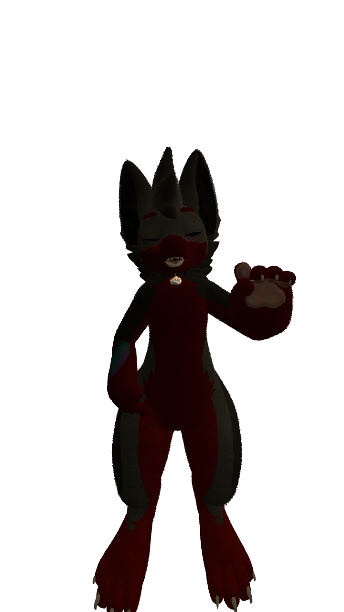

Hello, and welcome to the splash page of my digital portfolio. I am a full stack developer and IT technician. I am also an artist with an eye for fun or interesting ideas and pallets.
I am currently attentding St.Clair College's Computer Programming course. I hope to use my experience to help keep workplace networks secure or build websites for people who still desire that skillset!
